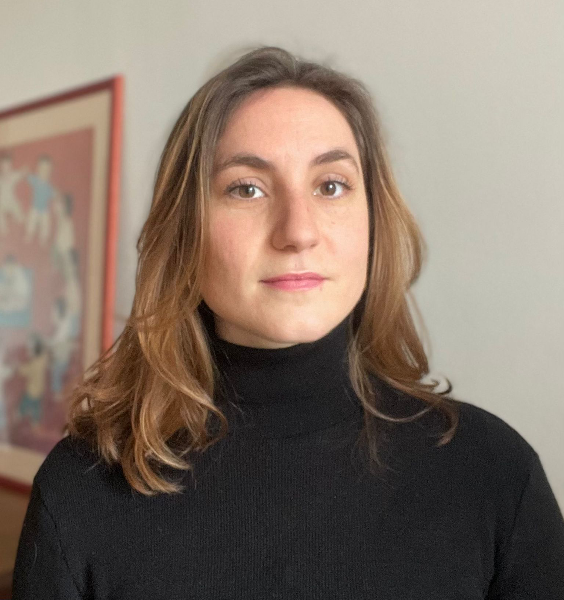

<main>
    
    <div class="about-me-container">
        <div class="about-me">
            <div class="about-me-container">
                
                <div class="about-me-text">
                    <h1>Mon parcours</h1>
                    <p class="psychology-explanation">
                        Diplômée de l’Université Paris V Descartes, j’ai suivi une formation de Psychologie clinique,
                        Psychopathologie et Psychanalyse (PCPP). Je dispose donc du titre de psychologue clinicienne.
                        <br>
                        Grâce aux heures de stage clinique effectuées lors de ce cursus, je suis également habilitée à
                        occuper la position de psychothérapeute.
                        <br>
                        J’ai décidé de poursuivre ma formation au sein d’une école de psychanalyse pour enrichir mes
                        connaissances cliniques et théoriques. J’évolue depuis quelques années au sein du Réseau pour la
                        Psychanalyse à l’Hôpital (RPH). Je participe aux colloques, aux supervisions et aux groupes de
                        lecture proposés. Je suis également une psychanalyse personnelle, ce qui permet, entre autres,
                        d’assurer mon discernement auprès des personnes qui viennent me rencontrer en consultation.
                        <br>
                        En complémentarité de cette activité, j’occupe un poste institutionnel à l’Education Nationale.
                        Je travaille auprès des équipes d’écoles primaires et je reçois des enfants avec leurs parents
                        pour différentes problématiques ou symptômes (difficultés d’apprentissage, trouble de
                        l’attention, énurésie, changements familiaux, etc.)
                        <br>
                        J’exerce également des missions d’enseignement à l’université Paris Cité en tant que chargée de
                        Travaux Dirigés.
                    </p>
                </div>
            </div>
        </div>
    </div>
</main>
